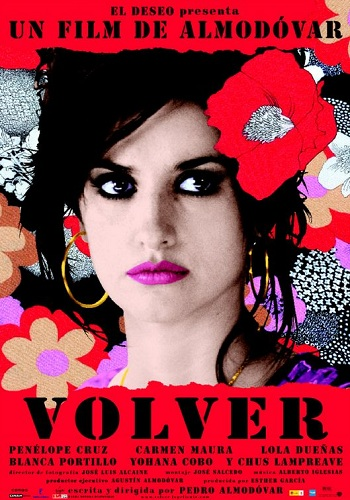
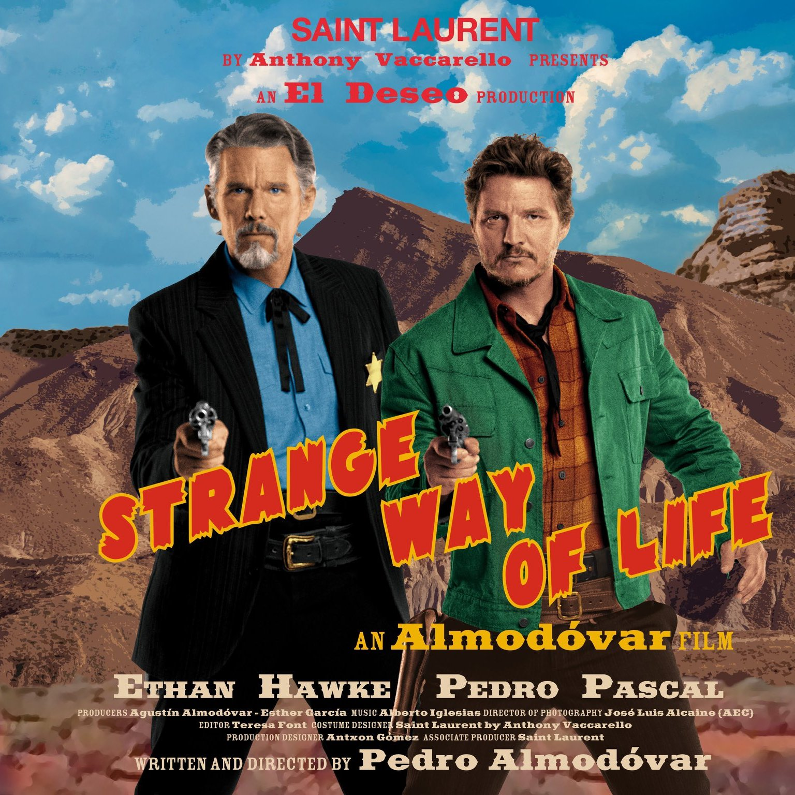
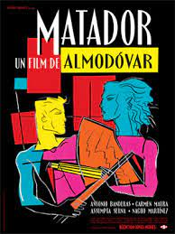
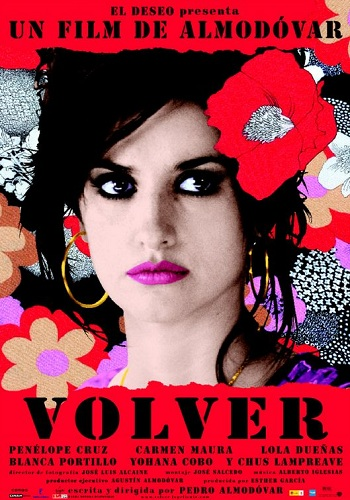
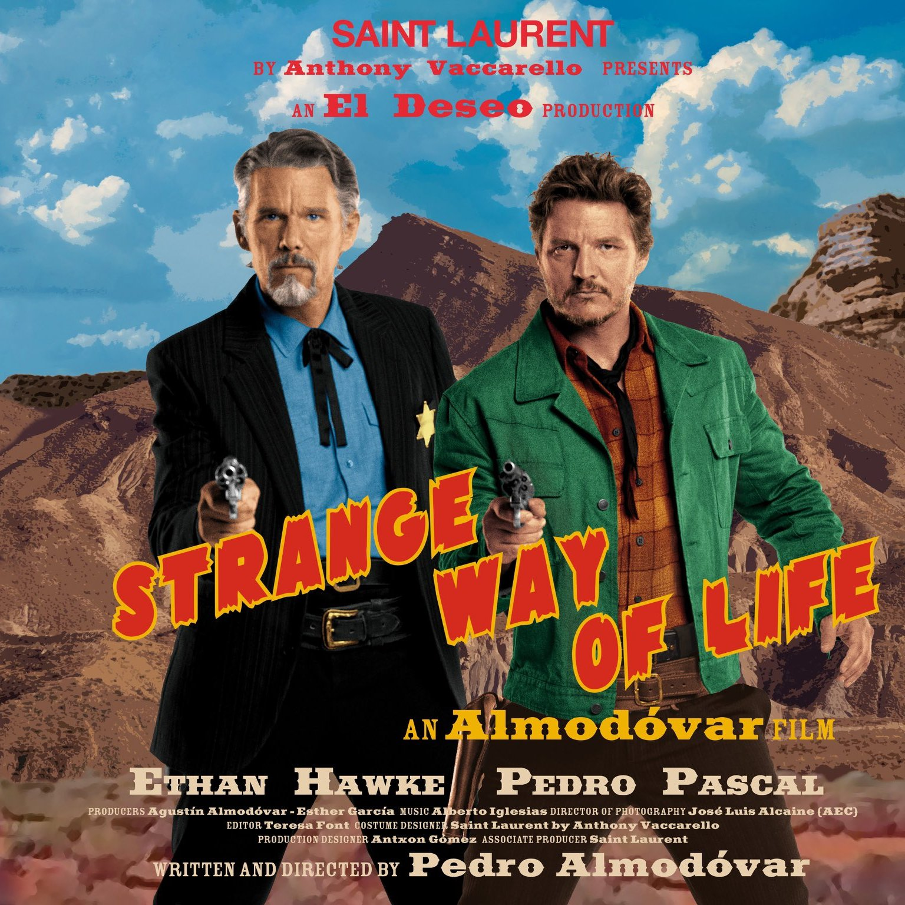
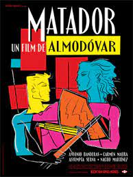

Sobre Pedro Almodóvar
Pedro Almodóvar Caballero (nascido em 25 de setembro de 1949, em Calzada de Calatrava, Espanha) é um dos diretores de cinema mais renomados da história do cinema mundial. Conhecido por seu estilo único e inovador, Almodóvar se tornou um dos maiores representantes do cinema espanhol contemporâneo.
Ao longo de sua carreira, Almodóvar foi responsável por criar uma vasta obra cinematográfica que explora temas como identidade, sexualidade, dor, e relações humanas complexas. Seu trabalho é frequentemente marcado por uma sensibilidade estética vibrante, personagens femininas fortes, e roteiros que desafiavam as convenções sociais.
Carreira e Realizações
Almodóvar iniciou sua carreira no cinema no final dos anos 1970, após ter se mudado para Madrid e se envolvido com o movimento cultural "Movida Madrileña". Seu primeiro grande sucesso foi o filme Todo sobre mi madre (1999), que ganhou o Oscar de Melhor Filme Estrangeiro. Outro de seus filmes mais aclamados internacionalmente foi Fale com Ela (2002), que lhe rendeu o Oscar de Melhor Roteiro Original.
Além do sucesso comercial, seu trabalho conquistou uma legião de fãs pela habilidade em tratar de temas difíceis, mas de uma maneira acessível e emocionalmente profunda. Ele é amplamente respeitado pela forma como utiliza o visual e a música para intensificar as emoções dos personagens, tornando suas obras verdadeiras obras de arte cinematográficas.
Entre seus outros filmes notáveis estão Mulheres à Beira de um Ataque de Nervos (1988), A Lei do Desejo (1987) e Volver (2006), todos extremamente influentes e aclamados pela crítica.
Filmes Premiados

Filmes


 




